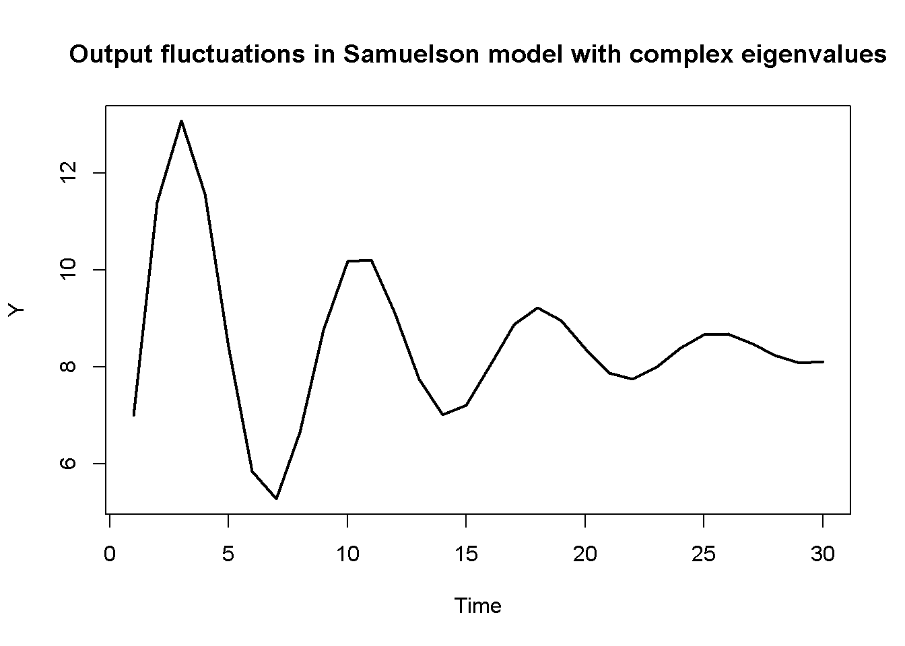

9An Introduction to the Analysis of Dynamic Models
To build and analyse dynamic models, we need to understand the dynamics of state variables, which are a function of their own previous values: \(y_t=h(y_{t-1})\). The state variables govern the dynamics of the entire model (including the non-state variables). Typically, as model has multiple state variables that interact with each other over time. As briefly shown in Chapter 2, we can simulate dynamic models numerically for a specific parameterisation. However, to study their dynamics in general, we need to mathematically analyse a system of difference (or differential) equations. This chapter provides a basic introduction to the mathematical tools to do this. It will help you understand the analytical discussions in the chapters on dynamic models but can be skipped if you are mostly interested in numerical simulation.
Solution of a single first-order linear difference equation
Consider a first-order linear difference equation:1
\[
y_t = a_0 + a_1y_{t-1}.
\]
One way to find a solution is through (manual) iteration:
The complementary function tells us about the ‘asymptotic stability’ of the equation: does \(y_t\) converge to \(y^*\) as \(t \rightarrow \infty\)?
For the case of a first-order difference equation, we can distinguish the following cases:
if \(|a_1|<1\), then the complementary function will converge to zero and \(y_t\) will approach the particular solution \(y^*\)
if \(|a_1|>1\), then the complementary function will grow exponentially or decay, and \(y_t\) will thus never converge to the particular solution \(y^*\)
if \(a_1=1\) and \(a_0 \neq0\), then \(y_t\) will grow linearly
if \(a_1=1\) and \(a_0 =0\), then \(y_t\) will not grow or fall forever, but it will also not approach a unique equilibrium
To better understand the last two cases, note that if \(a_1=1\), a different (more general) approach to finding the particular solution is required: the so-called method of undetermined coefficients. This method consists of substituting a trial solution that contains undetermined coefficients into the difference equation and then attempting to solve for those coefficients. If the trial solution allows to pin down unique values for the coefficients, it constitute a valid particular solution.
In the case above where \(a_1 \neq 1\), we could have used the trial solution \(y_t=y_{t-1}=y^*\) and then solve for \(y\) to obtain \(\frac{a_0}{1-a}\) as the particular solution. In the case where \(a_1=1\) and \(a_0 \neq 0\), we can use the trial solution \(y^*=kt\), which is a growing equilibrium. This yields \(y_t = k(t-1) + a_0\), which solves for \(k=a_0\), so that we can conclude \(y^*=a_0t\). This explains why we obtain linear growth. If \(a_1=1\) and \(a_0 =0\), we have \(y_t=y_{t-1}\), so that the equilibrium is given by the initial condition \(y_0\).
Solution of a linear system of difference equations
The solution approach just introduced can be extended to \(N\)-dimensional systems of linear difference equations of the form:
\[
y_t=a_0 + Ay_{t-1},
\]
where \(y_t\) is a \(1 \times N\) column vector and \(A\) an \(N \times N\) square matrix.
If the inverse \((I-A)^{-1}\) exists, which requires \(det(I-A) \neq 0\), the solution will be of the form:
The problem with this generic solution is that it is difficult to assess what is going on: the dynamics of any variable in \(y_t\) will depend on a lengthy combination of the parameters in \(A\) that result from repeated matrix multiplication (\(A^t=A\times A\times A\times A...\)). This makes it is impossible to assess whether the system converges to the particular solution. To address this problem, we can use a tool from linear algebra called matrix diagonalisation. Under certain conditions, a matrix \(A\) can be decomposed into the product of three matrices in which the matrix in the middle is diagonal. As we will see, this trick has a useful application to our problem.
A matrix \(A\) is diagonalisable if there is a diagonal matrix \(D\) and an invertible matrix \(P\) such that \(A=PDP^{-1}\). A major advantage of this decomposition is the following property: \(A^n = (PDP^{-1})^n = PD^nP^{-1}\).2 Thus, the \(nth\) power of the matrix \(A\), which typically yields very cumbersome expressions, simplifies to \(PD^nP^{-1}\), where the \(nth\) power of \(D\) is simply applied to each individual element on the main diagonal thanks to \(D\) being a diagonal matrix. As a result, diagonalisation allows us to write the complementary function in the solution to a system of difference equations as: \(PD^tP^{-1}y_0\). We can further define a vector of arbitrary constants \(c=P^{-1}y_0\) so that the complementary function becomes \(PD^tc\). For the first variable in the system, the solution would then take the form:
where \(v_j\) are the column vectors of \(P\) and \(\lambda_i\) are the elements on the main diagonal of \(D\). The \(v_j\) are called the eigenvectors of the matrix \(A\) and the \(\lambda_i\) are its eigenvalues (more about them in a second). From this representation of the solution, the nature of the dynamics can easily be determined by looking at the eigenvalue \(\lambda\) that is largest in absolute terms. This is also called the ‘dominant eigenvalue’. Only if the dominant eigenvalue is \(|\lambda|<1\) will the system converge to \(y^*\). The elements \(v_{ij}\) of the eigenvectors act as multipliers on the eigenvalues and can thus switch off certain eigenvalues (if they happen to be zero) or amplify their dynamics both into the positive and negative domain (depending on their algebraic sign).
How can the diagonal matrix \(D\) be found? Notice that \(AP=PD\) can also be written as \(Av=\lambda v\). We can then write \(v(A-\lambda I)=0\). We want to find the solutions of this linear system other than \(v = 0\) (we don’t want the eigenvectors to be zero vectors, otherwise the solution to the dynamic system presented above wouldn’t work). This requires the determinant of the matrix \(A-\lambda I\) to become zero, i.e. \(det(A-\lambda I)=0\). Note that then there will be an infinite number of solutions for the eigenvectors.
Let’s consider an example. Let \(a_0=0\) for simplicity, so that the dynamic system is \(y_t = Ay_{t-1}\). Let the matrix \(A\) be given by: \[A=\begin{bmatrix}7 & -15 \\ 2 & -4 \end{bmatrix}.\]
This second-order polynomial solves for \(\lambda_1=2\) and \(\lambda_2=1\), which will be the elements on the diagonal of \(D\).
To find \(v_j\), substitute the \(\lambda_i\) into \(v_j(A-\lambda_iI)=0\). For \(\lambda_1=2\), we get \(5v_{11}- 15v_{21}=0\) and \(2v_{11}- 6v_{21}=0\), yielding the eigenvector \(v_1=\begin{bmatrix} 3 \\ 1\end{bmatrix}\). However, any scalar multiple of this eigenvector (other than zero) is admissible. It is thus common to normalise the eigenvectors by dividing through one of its elements. Dividing through by the first element yields the normalised eigenvector \(v_1=\begin{bmatrix} 1 \\ \frac{1}{3} \end{bmatrix}\).
For \(\lambda_2=1\), this yields \(6v_{12}- 15v_{22}=0\) and \(2v_{12}-5v_{22}=0\) from which we can deduce that \(v_2=\begin{bmatrix} 5 \\ 2\end{bmatrix}\). The normalised eigenvector is \(v_2=\begin{bmatrix} 1 \\ 0.4 \end{bmatrix}\).
Of course, you can also perform these calculations in R or Python:
#Clear the environment rm(list=ls(all=TRUE))## Find eigenvalues and eigenvectors of matrix# Define matrixJ=matrix(c(7, -15,2, -4), 2, 2, byrow=TRUE)# Obtain eigenvalues and eigenvectorsev=eigen(J)(evals=ev$values)
Before comparing these analytical results with those from a numerical simulation, let’s summarise the information we gain from the eigenvalues, eigenvectors, and arbitrary constants about the dynamics of the system:
since the dominant eigenvalue \(\lambda_1=2\) is larger than one, we know that the system is unstable
since both elements in the dominant eigenvector \(v_1=\begin{bmatrix} 1 \\ \frac{1}{3} \end{bmatrix}\) are non-zero, both variables in the system will be driven by that dominant eigenvalue
since both elements in the dominant eigenvector are positive but the arbitrary constant \(c_1\) is negative for positive initial conditions (see below), both variables will decay
since both variables will decay at the same rate, their ratio will be constant as \(t \rightarrow \infty\) and will approach a value that is given by the ratio of the elements in the dominant eigenvector
To see the last point, observe that in \(\frac{y_{2t}}{y_{1t}}=\frac{\frac{1}{3}c_{1}2^t + 0.4c_{2}1^t}{c_{1}2^t + c_{2}1^t}\) the first terms in the numerator and denominator, respectively, quickly dominate the second terms as \(t \rightarrow \infty\) (you can show this formally using L’Hopital’s rule). Thus, \(\frac{y_{2t}}{y_{1t}}\) will approach \(\frac{1}{3}\) as \(t \rightarrow \infty\).
Let us simulate the system and compare the results for, say, \(t=10\) with the analytical solution:
# Set number of periods for which you want to simulateQ=100# Construct matrices in which values for different periods will be stored; initialise at 1y1=matrix(data=1, nrow=1, ncol=Q)y2=matrix(data=1, nrow=1, ncol=Q)#Solve this system recursively based on the initialisationfor(tin2:Q){y1[,t]=J[1,1]*y1[, t-1]+J[1,2]*y2[, t-1]y2[,t]=J[2,1]*y1[, t-1]+J[2,2]*y2[, t-1]}# close time loop# Plot dynamics of y1plot(y1[1, 1:15],type="l", col=1, lwd=2, lty=1, xlab="Time", ylab="y1")title(main="", cex=0.8)
## Compute solution manually for y2 at t=10 and compare with simulated solutiont=10evecs_norm[2,1]*c[1,1]*evals[1]^t+evecs_norm[2,1]*c[2,1]*evals[2]^t# analytical solution
# Compare y2/y1 with normalised dominant eigenvectory2_y1[,Q]
[1] 0.3333333
evecs_norm[2,1]
[1] 0.3333333
Python code
import matplotlib.pyplot as plt# Set the number of periods for simulationQ =100# Initialize arrays to store values for different periodsy1 = np.ones(Q)y2 = np.ones(Q)# Solve the system recursively based on the initializationfor t inrange(1, Q): y1[t] = J[0, 0] * y1[t -1] + J[0, 1] * y2[t -1] y2[t] = J[1, 0] * y1[t -1] + J[1, 1] * y2[t -1]# Plot dynamics of y1plt.plot(range(Q), y1, color='b', linewidth=2)plt.xlabel('Time')plt.ylabel('y1')plt.title('Dynamics of y1')plt.show()# Define the initial conditions y0y0 = np.array([y1[0], y2[0]])# Calculate the arbitrary constants c using the normalized eigenvectorsc = np.linalg.inv(evecs_norm).dot(y0)c## Compute solution manually for y2 at t=10 and compare with simulated solutiont =10+1evecs_norm[1, 1] * c[0] * evals[0] ** t + evecs_norm[1, 1] * c[1] * evals[1] ** ty2[t-1]# Calculate the ratio y2/y1y2_y1 = y2 / y1# Plot dynamics of y2/y1 for the first 50 periodsplt.plot(y2_y1[:50], color='black', linewidth=2, linestyle='-')plt.xlabel('Time')plt.ylabel('y2/y1')plt.show()# Compare y2/y1 with normalised dominant eigenvectory2_y1[Q-1]evecs_norm[1,0]
It can be seen that the simulated results are equivalent to the results we obtained analytically. The key takeaway is that by deriving information about the eigenvalues (and possibly eigenvectors) of the Jacobian matrix of the system, we are able to deduce knowledge of the dynamic properties of the system even without numerical simulation. However, the more complex the dynamic system, the more difficult this will be, thereby rendering numerical simulation a key tool to supplement formal analysis.
Complex eigenvalues and cycles
So far, we have discussed the case where the eigenvalues \(\lambda\) are real numbers. However, what if the polynomial \(det(A-\lambda I)=0\) does not yield real numbers? Recall that in the case of a second-order polynomial \(\lambda^2+b\lambda+c=0\), the two roots are given by \(\lambda_{1,2} = \frac{-b \pm \sqrt{b^2-4c}}{2}\). If the term under the root \(\Delta=b^2-4c\), also called discriminant, becomes negative, the solution will be a complex number. More specifically, we can write:
Thus, the two eigenvalues will be a pair of complex conjugates if \([c_1(1+\beta)]^2+4\beta c_1 <0\). Suppose we have \(c_1=0.4\) and \(\beta=2\). Then the discriminant will be negative and the eigenvalues will be complex:
#Clear the environment rm(list=ls(all=TRUE))# Set parameter valuesc1=0.4beta=2# Check if discriminant is negative(c1*(1+beta))^2-4*c1*beta
[1] -1.76
## Find eigenvalues and eigenvectors of matrix# Define matrixJ=matrix(c(c1, c1,beta*(c1-1), beta*c1), 2, 2, byrow=TRUE)# Obtain eigenvalues and eigenvectorsev=eigen(J)(evals=ev$values)
[1] 0.6+0.663325i 0.6-0.663325i
Python code
# Set parameter valuesc1 =0.4beta =2# Check if discriminant is negative(c1 * (1+ beta))**2-4* c1 * beta# Define the matrixJ = np.array([[c1, c1], [beta * (c1 -1), beta * c1]])# Calculate eigenvalues and eigenvectorsevals, evecs = np.linalg.eig(J)print(evals)print(evals)
Another way of understanding the logic behind complex numbers is through a so-called Argand diagram that plots the real part of the eigenvalue on the horizontal and the imaginary part on the vertical axis. By Pythagoras’ theorem, the distance of the eigenvalue from the origin will then be given by \(R=\sqrt{h^2+m^2}\). The value of \(R\) (which is always real-valued and positive) is called the modulus (or absolute value) of the complex eigenvalue and will contain important information about the dynamic stability of economic models that exhibit complex eigenvalues.
### Draw Argand diagram# Save real and imaginary part of complex eigenvaluere=Re(evals[1])im=Im(evals[1])# Plot complex eigenvaluepar(bty="l")plot(re,im, type="o", xlim=c(0, 1), ylim=c(0, 1), lwd=2, xlab="h", ylab="m", main="Argand diagram of complex eigenvalue")# Plot unit circleX=seq(0, 1, by=0.001)Y=sqrt(1-X^2)lines(X,Y, type="l", lty="dotted")# Plot a ray from the origin to eigenvaluesegments(0,0,re,im, lty='solid')# Add labelstext(0.1, 0.025, expression(theta), cex=1)text(0.1, 0.25, expression(R==sqrt(h^2+m^2)), cex=1)text(re, im+0.05, expression(lambda==h+mi), cex=1)
Python code
### Draw Argand diagram# Save real and imaginary part of complex eigenvaluere = evals[0].realim = evals[0].imag# Create a figurefig, ax = plt.subplots()ax.set_xlim(0, 1)ax.set_ylim(0, 1)ax.set_xlabel('h')ax.set_ylabel('m')ax.set_title('Argand diagram of complex eigenvalue')# Plot complex eigenvalueax.plot(re, im, 'o', markersize=8, color='k')# Plot unit circleX = np.linspace(0, 1, 100)Y= np.sqrt(1-X**2)ax.plot(X, Y, 'k--')# Plot a ray from the origin to the eigenvalueax.plot([0, re], [0, im], 'k-')# Add labelsax.text(0.1, 0.025, r'$\theta$', fontsize=12)ax.text(0.001, 0.25, r'$R=\sqrt{h^2+m^2}$', fontsize=12)ax.text(re, im -0.1, r'$\lambda=h+mi$', fontsize=12)plt.show()
The angle \(\theta\) of the line that connects the origin and the complex eigenvalue and the x-axis of the Argand diagram also contains information about the dynamics. To see this, note that the geometry of the complex number represented in the Argand diagram can also be expressed in trigonometric form: \[
\sin\theta=\frac{m}{R}
\]\[
\cos\theta=\frac{h}{R},
\]
where \(\theta=\arcsin (\frac{m}{R}) =\arccos (\frac{h}{R})=\arctan(\frac{m}{h})\)
Thus, we can write the complex eigenvalue also as:
By De Moivre’s theorem, we have \((\cos\theta \pm \sin\theta \times i)^t=(\cos\theta t \pm \sin\theta t \times i)\). Thus, the solution to a dynamic system that exhibits complex eigenvalues will be of the form:
\[
y_{1t}=v_{11}c_1 R_1^t(\cos\theta_1 t \pm \sin\theta_1 t \times i) +...+ y^*_1.
\]
From this solution we can again deduce key information about the dynamics of the system based on the (complex) eigenvalues:
stability will depend on the modulus: for \(R<\) the system will be stable, for \(R>1\) it will be unstable
from the nature of the trigonometric functions \(\sin(\theta t)\) and \(\cos(\theta t)\), we know that system will exhibit periodic cyclical dynamics as \(t\) increases
the length of the cycles will be given by \(L=\frac{2\pi}{\theta}\) and the frequency by \(F=1/L=\frac{\theta}{2\pi}\)
the amplitude of the cycles will depend on the elements of the eigenvectors, the initial conditions, and \(R\).
Let us simulate the Samuelson model with the parameterisation that yields complex eigenvalues to illustrate these results:
# Set number of periods for which you want to simulateQ=100# Set number of parameterisations that will be consideredS=1# Construct matrices in which values for different periods will be stored; initialise at 1C=matrix(data=1, nrow=S, ncol=Q)I=matrix(data=1, nrow=S, ncol=Q)#Construct matrices for exogenous variableG0=matrix(data=5, nrow=S, ncol=Q)#Solve this system recursively based on the initialisationfor(tin2:Q){C[1,t]=c1*(C[1,t-1]+I[1,t-1]+G0[1,t-1])I[1,t]=beta*(c1*(C[1,t-1]+I[1,t-1]+G0[1,t-1])-C[1,t-1])}# close t1me loop# Calculate outputY=C+G0+I# Time series chart of output dynamics in Samuelson (1939) modelplot(Y[1, 1:30],type="l", col=1, lwd=2, lty=1, xlab="Time", ylab="Y")title(main="Figure 1: Output", cex=0.8)

Python code
# Calculate modulusmod =abs(evals[0])print(mod)# Calculate cycle lengthimport mathL = (2* math.pi) / math.acos(re / mod)print(L)# Set the number of periods and parameterizationsQ =100S =1# Initialize matrices for consumption, investment, and exogenous government spendingC = np.ones((S, Q))I = np.ones((S, Q))G0 = np.full((S, Q), 5)# Solve the system recursively based on the initializationfor t inrange(1, Q): C[0, t] = c1 * (C[0, t -1] + I[0, t -1] + G0[0, t -1]) I[0, t] = beta * (c1 * (C[0, t -1] + I[0, t -1] + G0[0, t -1]) - C[0, t -1])# Calculate outputY = C + G0 + I# Plot the time series chart of output dynamicsplt.plot(Y[0, :30], color='k', linewidth=2, linestyle='-')plt.xlabel("Time")plt.ylabel("Y")plt.title("Figure 1: Output")plt.show()
You can see that the model generates cycles with a length (from peak/trough to peak/trough) of around 7.5 periods. Since the modulus is \(R<1\), the system is stable and eventually converges to the equilibrium.
Nonlinear systems
So far, we have analysed dynamic systems that are linear. However, in the more general case, a dynamic system may be nonlinear and of the form:
\[
y_t=f(y_{t-1}).
\]
An \(n\)-dimensional nonlinear system may have multiple equilibria \(y^*\). To analyse the dynamic properties of such a system, we normally conduct a linear approximation in the neighbourhood of one of the equilibria. In that sense, the stability analysis of a nonlinear system has only local as opposed to global validity.
Mathematically, linearisation around an equilibrium point can be done by conducting a first-order Taylor expansion around that equilibrium:
This yields a linear version of the system that can be written as:
\[
y_{t}=Ay_{t-1}+B,
\]
where \(A_{11}=\frac{\partial f^1(y^*)}{y_{1t-1}}\) and so forth. Thus, \(A\) is simply the Jacobian matrix of \(f(y_{t-1})\) evaluated at \(y^*\).
In practice, this means that to analyse the local stability of a nonlinear system, one needs to:
find the equilibrium solution \(y^*\) whose neighbourhood you want to analyse
compute the Jacobian matrix of \(f(y_{t-1})\)
substitute \(y^*\) into \(f(y_{t-1})\) and analyse the resulting matrix.
An example for the stability analysis of a simple nonlinear system can be found in Chapter 12.
Key takeaways
dynamic models are systems of difference (or differential) equations
the stability of a system depends on (a combination of) its coefficients
more generally, the system’s dynamic properties (including stability) are encapsulated in the Jacobian matrix
the (dominant) eigenvalues of the Jacobian matrix indicate whether a system is
stable (\(\lambda < 1\)) or unstable (\(\lambda > 1\))
acyclical (\(\lambda \in \mathbb{R}\)) or cyclical (\(\lambda \in \mathbb{C}\))
the (dominant) eigenvectors mediate the impact of the eigenvalues in the dynamics
nonlinear systems are analysed locally around one of its equilibria
References
Anthony, Martin, and Michele Harvey. 2012. Linear Algebra: Concepts and Methods. Cambridge UK: Cambridge University Press.
Chiang, Alpha C, and Kevin Wainwright. 2005. Fundamental Methods of Mathematical Economics. 4th ed. New York: McGraw-Hill Education.
Gandolfo, Giancarlo. 2009. Economic Dynamics. Study Edition. 4th Edition. Springer.
Samuelson, Paul A. 1939. “Interactions between the Multiplier Analysis and the Principle of Acceleration.”The Review of Economics and Statistics 21 (2): 75–78. https://doi.org/10.2307/1927758.
Sayama, Hiroki. 2015. Introduction to the Modeling and Analysis of Complex Systems. Open SUNY Textbooks, Milne Library.
We will focus here on difference instead of differential equations, i.e. on dynamics in discrete as opposed to continuous time. Most of the continuous-time counterpart is analogous to the material covered here. Sayama (2015) provides a very accessible and applied introduction to dynamic systems with Python code. An introductory treatment of the underlying mathematics is Chiang and Wainwright (2005), chaps. 15-19. Gandolfo (2009) provides a more advanced treatment of the mathematics as well as many economic examples. A great introduction to linear algebra is Anthony and Harvey (2012).↩︎
This is because in the product \((PDP^{-1})(PDP^{-1})(PDP^{-1})...\), each \(P\) cancels a \(P^{-1}\), except for the first \(P\) and last \(P^{-1}\).↩︎